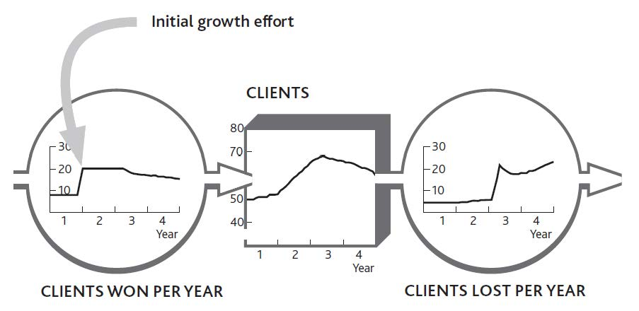
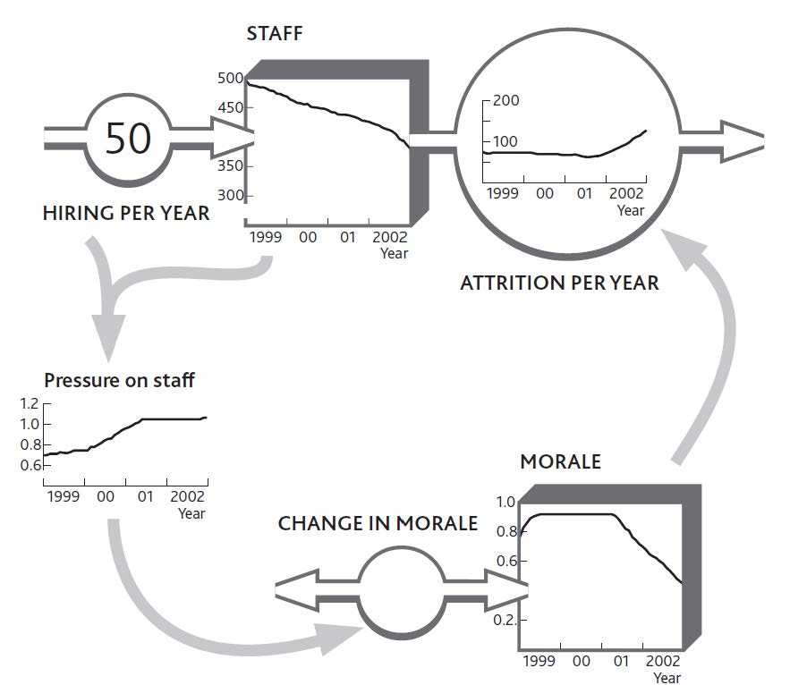

To understand how feelings drive people to change from one state to another, consider the example of a medium-size information technology (IT) service firm that found itself in trouble. It was losing its best clients, who complained of poor service and was also having trouble winning new business. To make matters worse, vital, skilled staff were leaving. Yet just a couple of years earlier, the firm had exhibited none of these problems and had been enjoying modest growth.
The trouble seemed to lead back to the arrival of a new head of sales and marketing, who had surveyed the firm’s market and found plenty of potential clients who wanted the kind of service support the firm offered. Until then, growth had largely come from occasional referrals by satisfied clients. The new guy convinced his colleagues they were missing a great opportunity and set about launching a sales campaign. Sure enough, he brought in new clients at a good rate (Figure 8.2 "A Service Firm’s Problem With Winning and Keeping Clients").
This new person had recently left, frustrated by the difficulty he was now having in winning new business and irritated by the growing distrust of the rest of the team. They were worried about what was happening and how to fix it. In particular, client losses had jumped to unacceptable rates and service quality had suffered—calls for help went unanswered and fixes that were done failed to solve customers’ problems. Moreover, the decrease in client acquisition did not seem to have been caused by market conditions; there was still plenty of potential business to be had. Calls to potential clients revealed that the firm had not won this business because of rumors about its poor quality.
Figure 8.2 A Service Firm’s Problem With Winning and Keeping Clients
Examining the quality problem first, the team confirmed what they already suspected, that the service staff had been under mounting pressure from the extra work required to serve all the new clients. They could cope with this pressure at first because they were not especially stretched, but a year or so later it got to be too much for them and they started making mistakes. The team did not know what the exact pressure of work had been, but by checking their records on customer service demand and staff levels, they could make a pretty good estimate.
Turning to the issue of client acquisition, the team surmised that word had gotten around about their quality problems, and so their reputation had been tarnished. From the quality estimates and the contacts that people in their market might have had with each other, they estimated what might have happened to their firm’s reputation. By putting this together with estimates of client losses, they obtained a picture of the dynamics of their client base (Figure 8.3 "Pressure of Work Creates Problems With Quality and Reputation").
The company’s management was left with one puzzle. If client losses had risen so that workloads were falling, why had pressure on staff stayed so high? The decrease in workload should have brought things back into balance, and the problem should have fixed itself.
The company had maintained a strong hiring rate, but all the same, its staff numbers had gradually declined. Previously this had not been much of a problem because increasing experience kept productivity moving upward, but the benefit was not powerful enough to keep work pressure under control when all the new client business came in. Staff records showed that turnover had risen particularly sharply in the past year.
Figure 8.3 Pressure of Work Creates Problems With Quality and Reputation

Strangely, the staff turnover problem appeared to be only a recent phenomenon. Conversations with some of the people leaving revealed that they were initially excited at the new opportunities coming in. It had taken time for the constant pressure of impossible demands to hit morale. The effect on motivation had been exacerbated by the now escalating need to refix the same client problems that should have been fixed before.
Although we have to be careful not to force standard answers on a specific situation, the structure in Figure 8.3 "Pressure of Work Creates Problems With Quality and Reputation" is remarkably common. Current customers have direct experience of current quality, so they often respond quickly when problems arise. Potential customers, on the other hand, have no direct experience of your performance. They can only go on what they hear about you indirectly, from information that leaks out about you from existing customers. This process may be slow, depending on how often potential customers interact and the effectiveness of trade surveys, for example.
A further important point to note is that this firm felt its reputation was still declining even though quality was getting no worse. This is because continuing bad messages about quality persist in depleting reputation. So current quality often drives customer losses, while reputation (which reflects past quality) drives customer acquisition.
Sketching these phenomena on the board gave the team a clear picture of how the staff had been affected by recent events (Figure 8.4 "Work Pressure Hits Morale, So Staff Losses Escalate"). They realized that their original hiring rate had never been high enough to build resilience in their group of professionals. Consequently, when pressure built up, the lid had blown off, which is why staff were now leaving at such a rapid rate.
In this case, we can see two key groups (clients and staff) choosing to move from one state (with the firm) to another (not with it), each driven to make these choices by powerful intangible factors (quality, reputation, and morale). What could be done to fix this problem?
As long as reputation and morale remained weak, three important flows would continue to run against the firm: slow client acquisition and rapid staff and client losses. Since work pressure was driving these problems, this is where any solution would have to be applied. The obvious approach, hiring more staff, turned out to be the worst possible response. New people did not understand the clients’ needs or how the organization’s procedures worked. The already pressured staff had to work even harder to coach them. That left only one solution: cut the workload.
Figure 8.4 Work Pressure Hits Morale, So Staff Losses Escalate
Less work meant fewer clients and perhaps less work from those that remained. The tough decision was made to terminate business from a selection of clients. Since the steady addition of new staff was also distracting the experienced staff, a further decision was made to stop hiring for the moment. However, certain types of work were subcontracted to another company.
At first sight, this solution looks absurd: We are losing clients and having trouble winning new ones, so you want us to stop selling and actually terminate existing clients? Also, our staff is under too much pressure, so you want us to stop hiring?
In this case, “Yes” to both questions. The problems were being exacerbated by the very efforts designed to solve them. As ever, the critical question to ask was “What is driving the resource flows?” Only removing the source of the problems would reset the machine to a state where it could cope—although as you might imagine, this can be a tough case to sell.
Our service firm’s perplexing response makes more sense when we look into the detail. First, the high ratio of work to capacity had one useful benefit: profits improved! This happy state was in danger of ending if the downturn continued, of course, but for now there was some financial headroom.
Second, the firm had some business that was more trouble than they were worth. Some clients constantly demanded more support than was in their original agreement. A selection of the worst offenders was called, told of the firm’s difficulties, and asked to refrain from making all but the most urgent support requests while the problems were resolved. Others, including some of the firm’s recent acquisitions, were advised to seek support elsewhere.
Third, client acquisition efforts did not cease altogether, but imminent potential business was just kept warm, rather than being actively sold a project. Indeed, the firm turned its response to its advantage, telling these clients that it was taking steps to fix the very problems about which they had heard rumors.
Beware! Just because dropping clients and freezing the hiring rate was right in this situation, it does not mean it will be right for you. A major implication of the strategy dynamics method is that simple solutions can rarely be transplanted from case to case (as is often implied for other management tools!). What is best for you depends on the specifics—including the numbers—in your own case.